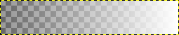
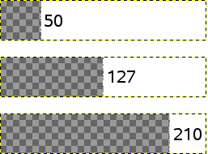

The command converts semi-transparent areas of the active layer into completely transparent or completely opaque areas, based on a threshold you set.
![[Nota]](images/note.png)
|
Nota |
|---|---|
|
It only works on layers which have an alpha channel. If the Lock alpha channel option is checked in the Layers Dialog, the filter will have no effect. This command only works on a single layer. |
- Presets, Input Type, Blending Options, Preview, Merge filter, Split view
-
Nota Essas opções são descritas em Seção 2, “Recursos comuns”.
- Value
-
The threshold alpha value determines which values will become transparent or opaque. You can set the transparency value to be used by using the slider or by entering a value between 0 and 1 in the input box. All transparency values above this threshold will become opaque and all transparency values below or equal to this threshold will become completely transparent.
Nota Este comando nunca vai tornará pixels completamente transparentes (valor de alfa = 0) opacos.
Figura 16.101. Exemplo de Limiar alfa

Um degradê de transparência 0-255.
Limiar definido em 50, 127, 210.